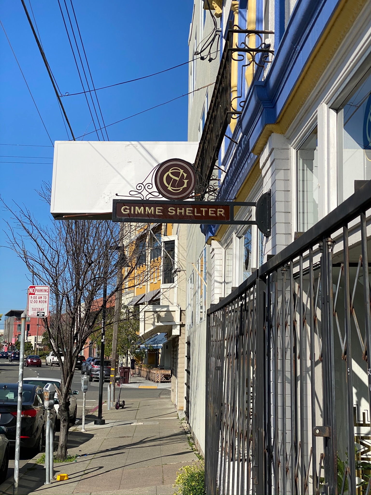

Data Preparation
We provide data and research expertise to collect, prepare, and process eviction data for sources who may not have the means to do so.
About
Mission
It started with a mother who was served an eviction notice, settled out of court, and continued to live in the residence for 2 more years. But the filing followed her—ultimately leading to denial of future housing. With support from the American Civil Liberties Union, her case exposed deep racial and gender disparities embedded in eviction practices.
Research in King County, Washington found that Black households were four times more likely than White households to receive eviction notices, and that Black women were five times more likely than White men to have an eviction case filed against them. Building on this work, founder Tim Thomas began examining local eviction data and later expanded this analysis across Washington State and other regions. These findings have informed the development of state and local policies, including Washington State's extension of the eviction notice period from 3 to 14 days and the establishment of Right to Counsel in Baltimore City, with the goal of reducing preventable evictions and supporting fairer processes.
The Eviction Research Network (ERN) specializes in making housing and eviction dynamics measurable and understandable. Through open-source tools, academic research, and collaboration with a wide range of partners—including community organizations, service providers, and public agencies—ERN develops accessible data that clarifies where and for whom evictions are most likely to occur. Similar patterns to those observed in Washington appear across many jurisdictions and reflect the long-term effects of historical housing policies and practices. Because stable housing underpins health, education, and overall well-being, these patterns have significant implications for communities' long-term outcomes. By identifying populations and neighborhoods at elevated risk of eviction at the local level, the Eviction Research Network supports data-informed strategies aimed at preventing displacement and strengthening housing stability.
What We Do
We collect, analyze, and visualize eviction data to put numbers to disparities left in the wake of historical injustice.
We provide data and research expertise to collect, prepare, and process eviction data for sources who may not have the means to do so.
We analyze the data we have collected and help other partners analyze data for disparities based on race, sex, and other factors. We then integrate that information into maps of the state that show disparities by region.
We create relationships and work alongside partners to help understand their data, share our analysis, and otherwise interact in order to create a force for advocacy, made exponentially more powerful through the mutual amplification of our collective voices.
Equipped with undeniable statistics, we advise and champion policies aimed to address disproportionate impacts on vulnerable populations and communities.

The team
Network
Practice network
Alumni
Graduate and undergraduate researchers who have contributed to ERN projects.
Academic home
The Eviction Research Network is a research program led by Dr. Tim Thomas, Assistant Researcher in the UC Berkeley Department of Sociology, which serves as its academic home. ERN is not a separate legal entity or a separate campus unit; its externally funded research is administered through the University.
Partners
Partner with ERN
We collect and analyze court records, build data pipelines, train collaborators, and co-author research with courts, legal aid organizations, agencies, advocates, and universities. If you have records no one has analyzed, or need help with the ones you have, get in touch.